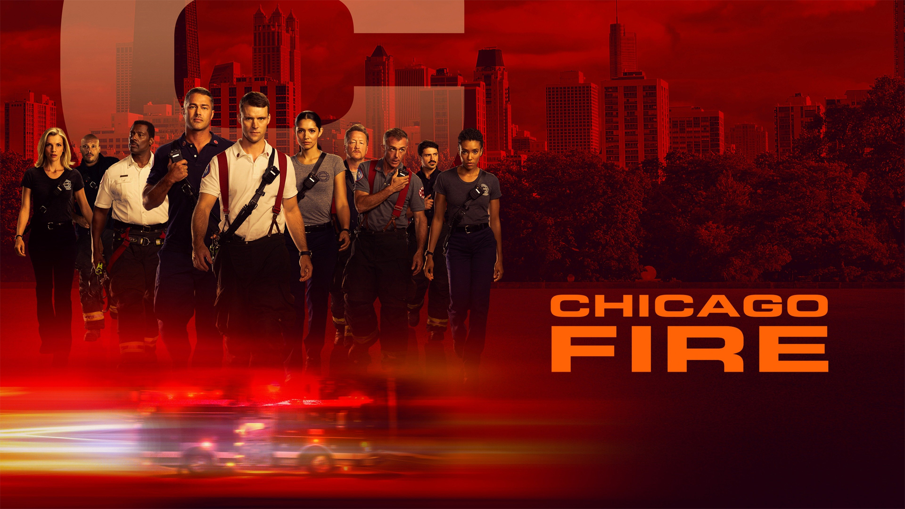
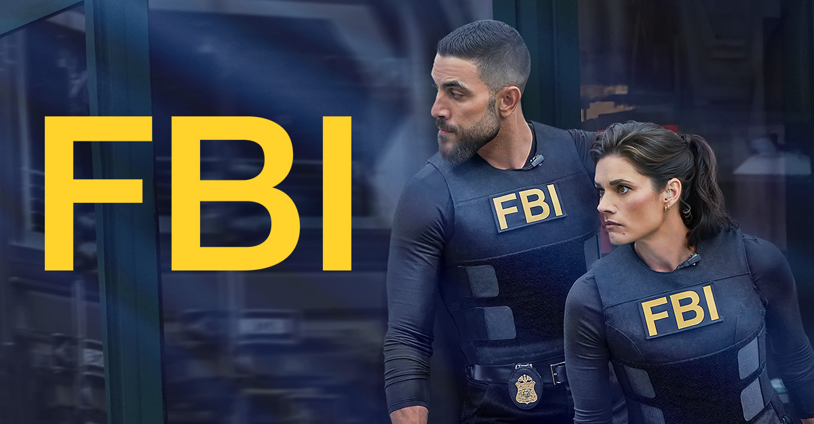
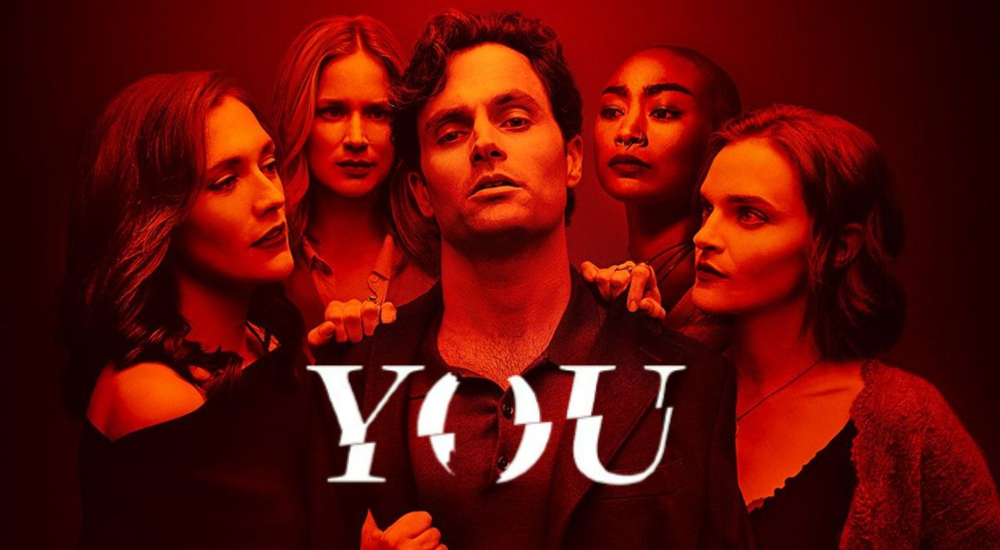
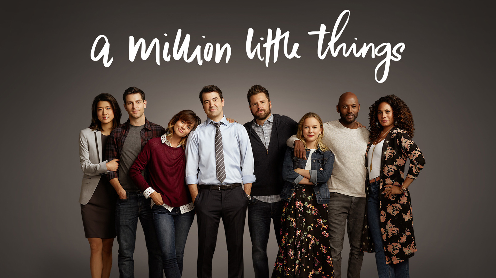
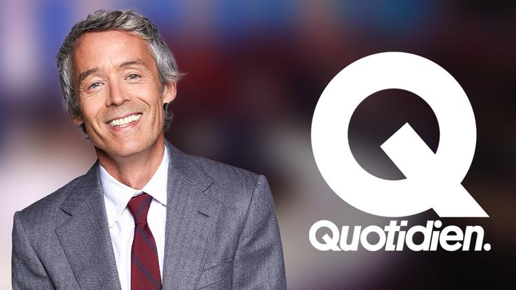
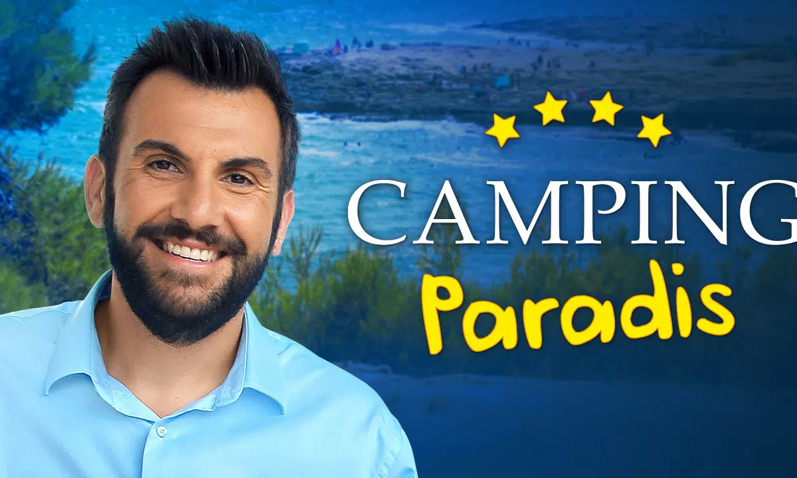
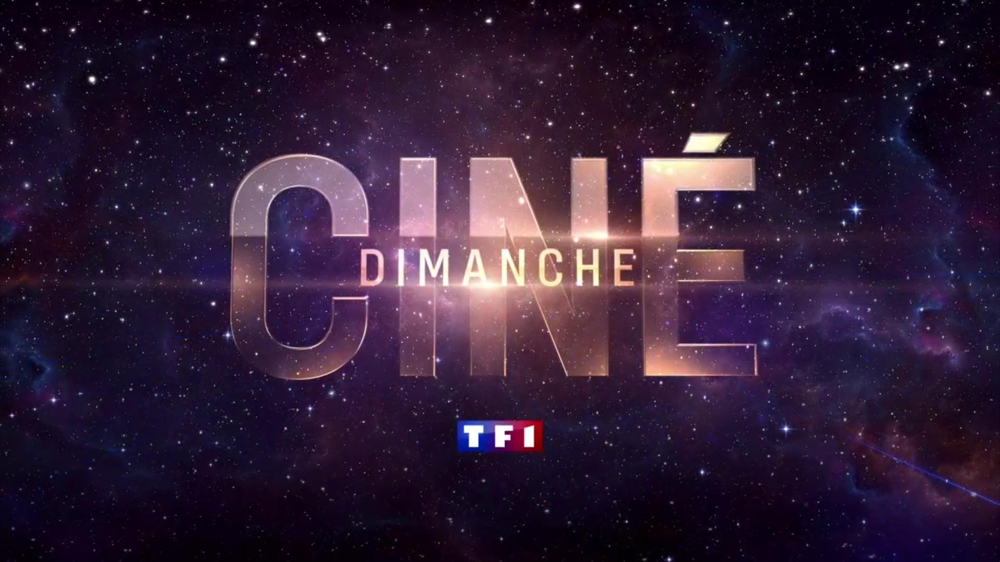

CAMPING PARADIS
"Les Français, Ensembles"
1ère chaîne de France et d'Europe
Canal1
CibleFamilles et Jeune
Audience64,5%
Programmes Phares
 Demain nous appartient
Demain nous appartient
 Le Journal de 20H
Le Journal de 20H
 NCIS
NCIS
Titre du programme
Description...
CAMPING PARADIS
"Continuons de grandir ensemble"
Canal6
CibleFamilles
Audience20,1%
Programmes Phares
 NCIS Originies
NCIS Originies

Chicago Fire
FBICAMPING PARADIS
"La chaîne des jeunes adultes et du divertissement."
Canal11
Cible15-34 ans
Audience14,5%
Programmes Phares
L'Étudiant Fou

YOU
A Million Little ThingsCAMPING PARADIS
"La chaines des films"
Canal10
CibleUrbains / Premium
Audience9,3%
Programmes Phares

Quotidien
Camping Paradis
Ciné DimancheCAMPING PARADIS
"Au coeur de l'info"
Canal26
CibleCSP +
Audience15,3%
Programmes Phares
 Le 17/20 : L'info en Grand
Le 17/20 : L'info en Grand
 Le 20H Média
Le 20H Média
 Reportage Grand Format
Reportage Grand Format